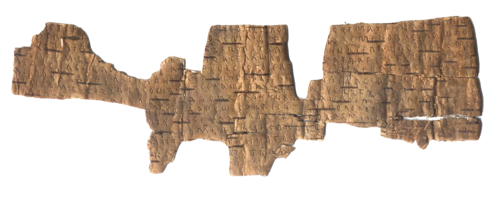

Что же нашли археологи?
Берестяные грамоты были обнаружены и открыты для исследователей в начале 1950-х годов. 26 июля 1951 г. — сейчас отмечается археологами как «День бересты» — во время работы в Новгороде экспедиции доктора исторических наук А. В. Арциховского в Неревском раскопе была найдена берестяная грамота. Грамоту обнаружила Нина Федоровна Акулова, сотрудница мебельного комбината. Свиток бересты лежал на мостовой XIV в., в щели, и его едва не приняли за деревянный поплавок. Спасло то, что на свитке четко виднелись буквы.
Несмотря на то, что грамота осталась достаточно целой, ее нельзя было читать сразу после находки. Сначала в полевой лаборатории ее опустили в горячую воду, отпарили и отмыли кистью. Потом бересту разделили на слои — расслоили и высушили между стеклами. Перед высыханием ее сразу сфотографировали и прорисовали, чтобы не тревожить подлинник частыми обращениями..